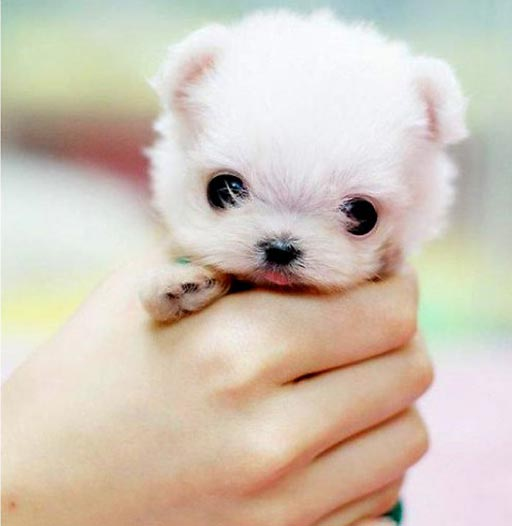

@copyright 2016 TJHacks
@copyright 2016 TJHacks
 Animal Cruelty Foundations:
ASPCA's focus is to get pets out of shelters and keep them in homes, while increasing the protections of animals under the law. They are helping to shape a society that continuously improves the lives of animals.
Wildlife Rescue's Vision is that humans come to see that we are members of a vast life community, that we experience the proper gratitude and respect for this community, and that we live in a more appropriate and compassionate manner in relation to the whole.
Since 1877 the historic American Humane Association has been at the forefront of every major advancement in protecting children, pets and farm animals from abuse and neglect. Today we’re also leading the way in understanding human-animal interaction and its role in society. As the nation's voice for the protection of children and animals, American Humane Association reaches millions of people every day through groundbreaking research, education, training and services that span a wide network of organizations, agencies and businesses.
People for the Ethical Treatment of Animals (PETA) is the largest animal rights organization in the world, with more than 3 million members and supporters. PETA focuses its attention on the four areas in which the largest numbers of animals suffer the most intensely for the longest periods of time: on factory farms, in the clothing trade, in laboratories, and in the entertainment industry. We also work on a variety of other issues, including the cruel killing of rodents, birds, and other "pests" as well as cruelty to domesticated animals. PETA works through public education, cruelty investigations, research, animal rescue, legislation, special events, celebrity involvement, and protest campaigns.
America for Animals is a new type of animal welfare organization - one that empowers advocates to promote compassion and fight cruelty in the communities where they live. We are building state-of-the-art web and mobile applications ("apps") to help advocates connect, organize, participate, and, most importantly, make a difference in the lives of animals.
We are World Animal Protection We end the needless suffering of animals We influence decision makers to put animals on the global agenda We help the world see how important animals are to all of us We inspire people to change animals' lives for the better We move the world to protect animals.
At International Animal Rescue we do exactly what our name says - we save animals from suffering around the world. Our work includes cutting free and caring for dancing bears in India, rescuing primates from captivity in Indonesia and sterilising and vaccinating stray dogs and cats in developing countries. Wherever possible we return rescued animals to their natural environment but we also provide a permanent home for animals that can no longer survive in the wild.
@copyright 2016 TJHacks